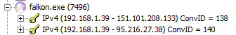

This article was last edited on 8/24/2018
If you want to edit this article, or contribute your own article(s), visit us at the git repo on Codeberg. All contributions must be licensed under the CC0 license to be accepted.

Falkon is a KDE web browser using QtWebEngine rendering engine, previously known as QupZilla.
When another contributor tested this browser on Linux, it made no unsolicited connections. When I ran it on Windows, it connected to a domain unrelated to the homepage (DuckDuckGo). But, i'm not sure what it was for, and it wasn't reproduced on Linux. This browser is probably fine, but you should run your own tests and email me about what you found or didn't find.
On the first run of Falkon, using the 32-bit Windows version, it connected to these addresses, even though I was on its homepage, which seems to be locally stored because it does not create any requests when I go to it normally. I don't know what these are for. Maybe it's a form of phoning home? The first IP is for the domain: github.map.fastly.net which seems to be part of a CDN.
This article was last edited on 8/24/2018
If you want to edit this article, or contribute your own article(s), visit us at the git repo on Codeberg. All contributions must be licensed under the CC0 license to be accepted.